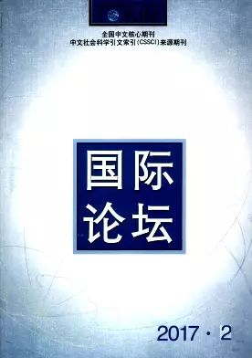

收录于合集

《国际论坛》（双月刊）2017年第2期

下载方式见底部
奥巴马政府的全球导弹防御政策与“萨德”在韩国的部署
刘磊聂 冰玥
中国海洋大学法政学院 中国海洋大学法学博士后流动站
评论
摘要： 奥巴马政府继承了小布什政府部署全球导弹防御系统的政策,在完成美国本土和东欧的反导部署之后,转向亚太特别是向东北亚地区扩展。亚太反导部署已经成为美国全球导弹防御计划的重要组成部分。2013年以来朝鲜核导计划的发展,特别是2016年的两次核试验促使美韩决定在韩国部署“萨德”反导系统。这使得东北亚国际关系和安全局势愈加复杂和危险,也给中国的安全与外交带来严峻挑战。中国有必要冷静分析和应对,从中美关系的角度寻求解决方案。 更多还原
关键词： 奥巴马政府; 导弹防御; “萨德”反导系统; 中美关系;
群体化:新兴大国参与全球气候治理的路径选择
赵斌
西安交通大学国际问题研究中心 西安交通大学近现代历史研究所
评论
摘要： 气候变化已成为国际问题中的热点与难点,且由于其长期性、不确定性和公共问题属性而成为典型的政治议题。全球气候问题呼唤全球气候治理,以巴西、南非、印度和中国为代表的新兴大国,形成了“抱团打拼”态势,群体化参与全球气候治理。这种路径选择,源自结构和进程层次。全球气候制度结构是一种松散耦合的机制复合体,对参与主体缺乏有效的规约,变革成本较高,存在多层治理和复杂决策的困境;新兴大国的主体进程,则表现为协调作用突出、基础四国松散联合主导、多群体间相互重叠,因而群体化参与全球气候政治实践平台。 更多还原
关键词： 全球气候政治; 全球气候治理; 新兴大国; 群体化;
论全球治理实践中的指数应用与构建
蒋力啸
上海外国语大学 上海国际问题研究院科研外事处
评论
摘要： 指数正被日益广泛地运用在全球治理实践中。指数的基础是原始数据,关键在于相关理论逻辑,核心是其背后承载的治理理念。指数在全球治理实践中有利于增强决策的科学性和民主性,监督治理进程,降低国际机制运行成本,促进国际机制间互动,巩固和推广相关治理理念。然而指数也可能为构建者用以推进私利,损害治理实践。当前,西方发达国家(机构)在指数构建中占据绝对优势,虽有可资借鉴的经验,但其流弊亦多。鉴于此,中国相关机构在参与指数构建的过程中,可以强调共商、共建、共享原则,创新推广和传播模式,加强理论建设,弘扬具有包容性的治理理念,从而发挥指数在全球治理中的积极作用。 更多还原
关键词： 全球治理; 指数应用; 指数建构; 脆弱国家指数; 治理理念;
澳大利亚的南海政策:取向与限度
王传剑
天津师范大学政治与行政学院
评论
摘要： 澳大利亚的南海政策是由包括历史与地理、经济与安全、美国与中国、规则与秩序等在内的多种因素共同促动的结果。尽管由于各个方面的局限,它在当前局势发展中只能作为一个次要角色起到某种辅助作用,但却在很大程度上给南海问题的管控带来了新的不确定性。对中国来说,硬性排斥澳在地区事务中发挥特定作用并非理性之道,一味指责澳在南海问题上施加负面影响亦非明智之举,必须把南海问题放在中澳关系的大势之中做出全面考量,把中澳关系置于亚洲共同体建设的大局之中进行重点培育。唯有如此,才能在推动中澳关系健康稳定发展的同时,确保澳大利亚在南海争端中能够成为“合作者”而非“搅局者”。 更多还原
关键词： 南海问题; 澳大利亚对外政策; 政策取向; 澳美同盟; 中澳关系;
美国智库近期南海问题研究成果评述
罗婷婷白蕾
国家海洋信息中心海岛与权益部
评论
摘要： 2015—2016年南海地区形势发生了质的变化,南海争端从地区性的领土主权和权益之争向大国间的地区主导权竞争转变。在这一背景下,美国智库围绕着南海仲裁案、美国的南海利益、中美关系、南海形势发展趋势四个重要议题展开了全方位的研究,并形成了几个试图影响美国南海政策的倾向性意见。通过对美国智库近期南海研究成果的梳理和分析,有利于我们把握美国南海政策的风向和趋势,为南海权益维护提供有益参考。 更多还原
关键词： 美国智库; 南海仲裁案; 航行自由; 中美关系;
国家主权视阈下跨界水资源冲突与合作法律理论的重构
邵莉莉
中国政法大学国际法学院
评论
摘要： 基于其“共享自然资源”的法律属性,跨界水资源的水权性质应界定为跨界水资源的主权所有权,其不是跨界水资源主权,更不是基于国内物权理论构建的跨界水资源所有权,应当属于流域各国对跨界水资源的一种公权性支配。限制主权理论因忽视跨界水资源的主权所有权,在实践和理论中都面临着困境而应被摒弃。随着生态系统管理理念的法律化,在明确跨界水资源的主权所有权的前提下,共同利益理论作为解决跨界水资源冲突与合作的根本解决途径,应从跨界水资源保护相关的实体性规则和程序性规则两个维度予以构建,与之相关的要素主要包括主体、制度、程序等方面,这也是未来跨界水资源理论发展的新课题。 更多还原
关键词： 国家主权; 主权所有权; 限制主权理论; 共同利益理论;
日本文化视野中的“中国”
王智汪
淮北师范大学历史系
评论
摘要： 从文化角度上看,“中国”一词本身就含有地理区域、民族类别及文化体系等多重涵义,日本学者正是从这种文化角度来解读“中国”一词的内涵。这种解读既可以让我们审视日本文化的深层结构,又可以让我们重新认识到日本在接受中国文化时,自身也一直在追求与中国相对等的文化地位。日本对传入的中国文化是一种有选择性的接受,并且在汲收的同时,根据自身的需要,以自己的特有方式加以“过滤”,将其本土化,这无疑反映了中日文明交流中的独特历史进程。 更多还原
关键词： 中国; 日本; 华夷之辨; 文化视野;
2013—2016年间美国学术界关于中美关系的研究
陶季邑
暨南大学社会科学部
评论
摘要： 美国学术界对2013年以来中美关系的现状作了较客观的描述,对中美关系的前景也适当地进行预测,并就未来中美关系如何进一步发展提出若干颇有见地的建议。这些表明,美国学术界对近年两国关系的研究较有成效。他们的这些探讨不仅在一定程度上有助于推动中美关系总体上继续在曲折中发展,而且对当今中国学术界深入研究此课题具有一定的参考价值。当然,他们在探讨的过程中也有不足之处。 更多还原
关键词： 美国学术界; 中美关系; 2013—2016年;
功能主义与永久和平:试析戴维·米特兰尼的世界共同体思想
郭海峰崔文奎
山西大学政治与公共管理学院
评论
摘要： 米特兰尼是欧洲功能主义的创始人,被尊称为“功能主义之父”。深受英国自由主义影响的米特兰尼,在继承和延续英国自由主义政治思想基础之上,结合对于两次世界大战及其间隔期的深刻反思,提出一条能够实现“永久和平”的理论路径——功能主义。作为自由主义学者,米特兰尼的身体中仿佛“天生”包含着“反国家”的思想基因:一方面,米特兰尼从实际观察中指出“国家的新变化”,肯定“国家的衰落”;另一方面,米特兰尼提出“超越国家体系”的理论路径,为人类谋划构建“世界共同体”,对“永久和平”在未来的实现充满信心。 更多还原
关键词： 戴维·米特兰尼; 功能主义; 永久和平; 世界共同体; 全权国家;
**
**
美国冷战政策的开拓者:洛伊·亨德森外交思想述论
薛丹李晔
东北师范大学历史文化学院
评论
摘要： 洛伊·亨德森是我们研究美国冷战政策时的一个不容忽视的人物,他是美国国务院最早提出对苏联实施遏制政策和主持起草“杜鲁门主义”的资深外交官。自上个世纪20年代末开始,他就确立反苏立场,并坚信苏联将推动世界革命作为外交目标;二战结束后,他从研究美国中东政策入手,向国务院建言插手中东事务以遏制苏联共产主义的扩张,并主持和参与了杜鲁门宣言的起草工作。本文全面探究了亨德森遏制苏联思想的形成和推动杜鲁门主义出台的过程,以图对全面了解美国冷战政策的起源与实质提供新的参考。 更多还原
关键词： 洛伊·亨德森; 美苏冷战; 杜鲁门主义; 遏制政策;
多重利益碎片化与南亚区域合作——兼谈中国的角色与作用
吴磊曹峰毓
云南大学国际关系研究院
评论
摘要： 南亚地区多种利益碎片化的状态是由物质性因素与社会性因素共同作用的结果。其中,物质性因素主要包含权力、安全和经济等方面,社会性因素主要包括宗教、民族、历史文化等方面。这种利益碎片化导致了南亚多边合作受阻,双边合作有限,与之相对,南亚国家与域外国家的合作却得到了快速发展。在此情况下,中国应在加强与印度的互信、互惠基础上,发展与其他南亚国家的双边关系,着力推进中巴经济走廊的建设;同时,积极开展与南亚国家的次区域合作,打造畅通、共赢的孟中印缅经济走廊。 更多还原
关键词： 南亚; 区域合作; 利益碎片化; “一带一路”;
论埃及剧变中的女性政治参与
谷亚平
中国社会科学院研究生院
评论
摘要： 2011年的埃及政治剧变为女性的政治参与提供了契机。在此次政治剧变中,女性积极参与各种政治活动,走上街头,在穆巴拉克下台的过程中发挥了重要作用。在埃及政治重建的过程中,妇女主动表达诉求,参与国家政治建设,但是,其政治参与的道路充满着曲折。特别是埃及社会存在严重的针对妇女的暴力行为,其参与宪法制定的过程也受到了各种限制。女性政治参与出现困境的原因在于,女性运动缺乏独立性而被当做是政治工具、父权制的限制、殖民主义的影响以及来自女性自身的阻力等。但应该指出的是,埃及妇女的声音正在越来越多地被外界听到,妇女自身的政治参与意识也在逐渐提高。 更多还原
关键词： 埃及剧变; 女性政治; 性别暴力; 妇女解放;
获取方式：
公众号后台（聊天页面）发送“ 国际论坛 ”自动获取！
声 明
国政学人微信公众平台系非盈利学术平台。文章出自最新的南大CSSCI和北大中文核心来源期刊。目的是方便广大学人进行学术研究，促进学术的传播和交流，不做任何商业用途。如有任何权利问题，请直接与我们联系。
上划拖动查看 ↑↑↑
“国政学人”微信公众平台立足于政治学、国际政治与国际关系等专业领域，系统更新最新核心期刊与经典著作，兼顾社科学术研究方法和论文写作技巧的普及。“我们既生产学术，又做学术的搬运工。”“国政学人”致力于打造广大学人的掌上图书馆与高端学术传播平台，立志为中国国际政治学的传播与发展贡献自己的一份力量。
如果您有佳作或批评建议，请编辑内容发送至guozhengxueren@163.com, 欢迎来信与投稿！请动动手指分享到您身边的学术群、朋友圈，让国政学人惠及更多的朋友，